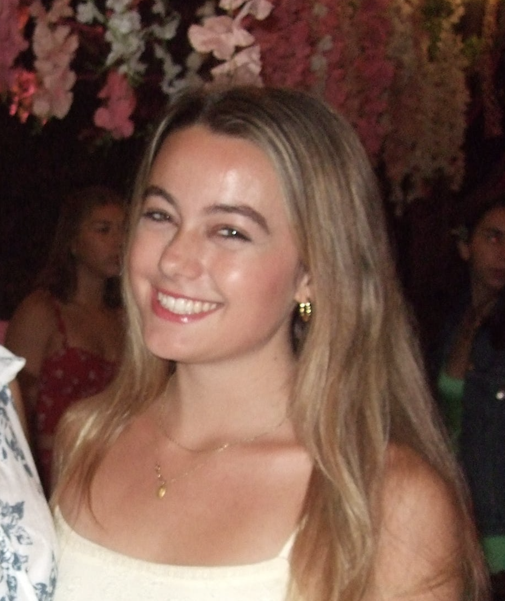

Hi, I'm Taylor.
Stanford CS student trying to build thoughtful software and useful tools for healthcare, AI, and human-computer interaction.
taylor52@stanford.edu ->
Stanford CS student trying to build thoughtful software and useful tools for healthcare, AI, and human-computer interaction.
taylor52@stanford.edu ->
Large-scale installation with real-time LED animation simulation and projection mapping.
TreeHacks build using LiDAR foot scans to generate 3D-printable insoles in minutes.
Used YOLO + Jetson to run gesture recognition and emulate Bluetooth controller input.
Researching medical computer vision at Stanford's Melcher Lab.
Incoming Software Engineering Intern at Apple.
Based in Stanford / Bay Area.
Recently ran Napa Half. Strava ->
Upcoming SF Marathon.
Aida (SWE Intern, 2025): Built Python/SQL/GCP backend services for CRM automation and production workflows.
Stanford AIMI (Software Intern, 2022-2023): Trained a ResNet-50 chest X-ray device detection pipeline to 97% accuracy.
Melcher Lab, Stanford (Software Engineer, 2020-2025): Co-developed a Jetson + iOS + GCP liver analysis system with 100x lower latency.